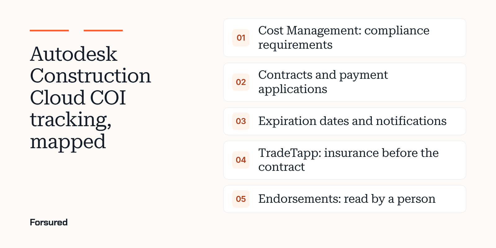

Blog / Tech stack
Tech stackAutodesk Construction Cloud COI tracking: where contractor insurance lives in Forma Build and what it checks
Autodesk Construction Cloud COI tracking, now in Forma Build, works through compliance requirements in Cost Management. A project admin requires a certificate of insurance, with an expiration date, on a contract or payment application, and the item can't be submitted until it's uploaded. TradeTapp can block a contract when insurance is missing. Nothing in Autodesk's docs reads the endorsements.

This is the second post in our "What's in your stack" series, where we take one tool general contractors run every day and show where contractor insurance and COI data sits in it. Last time it was Procore. This time it's Autodesk Construction Cloud COI tracking, which now lives under a new name.
In March 2026, Autodesk said Autodesk Construction Cloud is now Autodesk Forma. Autodesk Build became Forma Build, and Autodesk Docs became Forma Data Management. Autodesk says nothing moved: no data migration, and no change to URLs, logins, APIs or integrations. So if your team still says "ACC," the setup below is the one you have.
Every Autodesk detail below comes from Autodesk's own pages and help docs, checked on Nov 26, 2026. Check the linked page before you change a setup.
Can Autodesk Construction Cloud track certificates of insurance?
Yes, Autodesk Construction Cloud COI tracking runs through compliance requirements in Cost Management, part of Forma Build. Autodesk's compliance requirements help page says the workflow can "track and store lien waivers, certificates of insurance, bonding documents, and other required materials before submissions proceed."
Project administrators create compliance requirement templates in settings, on the Cost or Change Order tab. Members with collaborative permission then upload the documents on each item, from their computer or from Forma Data Management. For certificates of insurance and other time-sensitive documents, the requirement can ask for an expiration date, and Autodesk says expired documents show in calendar views and notifications.
Where does contractor insurance data live in Forma Build?
Contractor insurance data in Forma Build lives on the cost items that compliance requirements attach to, and in TradeTapp if you use it for qualification.
| Where | Attaches to | What it holds | Can it block? |
|---|---|---|---|
| Cost Management, document-based compliance requirement | Contracts, cost payment applications, subcontract change orders, owner change orders, RFQs | The uploaded certificate and, if required, its expiration date | Yes, Submit stays disabled until required documents are uploaded; it can be unblocked |
| Cost Management, TradeTapp condition (Insurance Programme) | Contracts | Whether the supplier's insurance documents in TradeTapp are present and not expired | Yes, sending the contract is blocked; members can't override it on the contract |
| TradeTapp qualification record | The subcontractor, across projects | Questionnaire answers, internal limits, qualification status and expiration | Through the contract condition above |
Each item shows a compliance status: Compliant, Pending (documents needed), Not Applicable or Not Required. A requirement can be made optional, and if every requirement on an item is optional, Autodesk counts the item as compliant.
Notice what the record doesn't hold: limits, policy numbers or carriers as typed fields, the way some systems store certificates of insurance. Compliance requirements in Forma Build track that the right document is uploaded and dated. They don't store what it says.
How do compliance requirements block a contract or payment application?
Compliance requirements block a contract or payment application by disabling submission until they're met. Autodesk says the system "can block submissions until requirements are met," and a required document keeps the Submit button disabled until it's uploaded.
That makes a certificate of insurance requirement on a cost payment application the closest thing Forma Build has to holding a payment for missing insurance. Two details matter:
- Document-based blocks can be lifted. Autodesk says "you can unblock and allow submission actions even when compliance is pending." Decide who on your team may do that, and when.
- TradeTapp blocks can't. A TradeTapp-based condition always blocks sending the contract when it isn't met, and members can't override it on the contract.
If subcontractors bill through GCPay, Autodesk's GCPay integration page says they complete the compliance documents the general contractor asks for there, and approved payment applications come into Cost Management read-only. The page doesn't say the compliance documents themselves sync.
What does TradeTapp add for insurance?
TradeTapp adds a check on insurance before the contract goes out. TradeTapp is Autodesk's qualification tool, with custom questionnaires, internal limits, financial ratio calculations, approval workflows, project-specific assessments and automated renewal requests to subcontractors. It syncs qualification data to BuildingConnected Pro, where Autodesk's bid management post shows qualification status, expiration date and project and total limits next to each bidder.
The link to Cost Management is the Insurance Programme condition: if the supplier's insurance documents in TradeTapp are missing or expired, the contract can't be sent. That's a useful gate at award. It checks presence and date, not coverage, and TradeTapp's own page doesn't describe reading certificates or endorsements.
What doesn't Autodesk Construction Cloud COI tracking check?
Autodesk Construction Cloud COI tracking checks that a certificate is uploaded and, if you ask, that it's in date. The help pages we read don't describe reading the certificate, pulling limits from it, or checking the endorsements behind it. None of them mention additional insured forms, waiver of subrogation, primary and noncontributory wording, or completed operations.
That's where the risk sits on a contractor COI. A certificate can be uploaded, dated and Compliant in Forma Build while the umbrella limit is below the subcontract, or the additional insured endorsement covers ongoing operations and not completed operations. Our guide to endorsement review explains why the form, not the checkbox, decides coverage, and how to check a contractor COI walks through each line someone still has to read.
Requirements for certificates of insurance are also set per project, in project settings. If an owner on one job wants higher limits than your standard, the requirement can say so in its name or description, but checking the document against it is a person's job.
Where does contractor insurance and COI data sit in Autodesk Forma?
Contractor insurance and COI data in Autodesk Forma sits in Cost Management, as uploaded documents with expiration dates on contracts, payment applications and change orders, and in TradeTapp, as qualification records that can stop a contract from being sent. The certificate is a file. The date is a field. The coverage inside it isn't checked by anything in Autodesk's docs.
That makes Autodesk Construction Cloud COI tracking in Forma Build a good place to enforce that a current certificate is on file before a contract goes out or a payment application moves, and a good record of who uploaded what. It isn't, by itself, a reviewer of what the certificate and endorsements say. Teams fill that gap with a person on the risk or project team, or with a tool connected to Autodesk. If you're weighing tools, use our COI tracking software checklist and see how they compare in our guide to the best COI tracking software for construction. Autodesk's pricing page doesn't list prices, so ask your rep whether Cost Management and TradeTapp are in your contract.
Forsured checks every contractor COI and endorsement against your project requirements, flags coverage gaps, brings the broker into the fix and keeps watching after approval.
Get the Forsured weekly newsletter.
One email every Monday: short summaries of the week's posts on contractor COIs and project requirements, plus the coverage gaps we're seeing on real projects.
You're on the list. Look for the newsletter on Monday.
One email a week. No spam. Unsubscribe anytime.
About Forsured
Forsured is construction insurance compliance software for general contractors and the brokers who insure their trade contractors. You set each project's insurance requirements once. Forsured reads every contractor COI and endorsement against them, flags each gap with the reason, and keeps checking through renewals until the job is done.
- Project requirements with exceptions, not one template for every job
- Endorsement review (additional insured, waiver of subrogation, primary and noncontributory), not just the certificate
- A shared workspace where the contractor's broker sees exactly what's missing
- A person on your team approves every result, with a full review history
“What stood out to us is that Forsured doesn't just organize the paperwork. It helps us understand what meets the project requirements, what needs attention, and what needs to happen next. That clarity across the GC, subcontractor, and broker is where we see the real value.”
Send us one project's requirements and a contractor COI or two. We'll show you every gap we find, free.
Common questions
Can Autodesk Construction Cloud track certificates of insurance?
Yes. Autodesk says the compliance requirements workflow in Cost Management can track and store lien waivers, certificates of insurance, bonding documents and other required materials. A project admin builds the requirement in settings, members upload the certificate on the contract or payment application, and the requirement can ask for an expiration date so expired documents show up in calendar views and notifications.
Is Autodesk Construction Cloud now called Autodesk Forma?
Yes. Autodesk announced in March 2026 that Autodesk Construction Cloud is now Autodesk Forma, and that Autodesk Build is now Forma Build and Autodesk Docs is now Forma Data Management. Autodesk says there's no data migration and no change to URLs, logins, APIs or integrations, so existing compliance setups keep working under the new names.
Can Forma Build hold a payment for a missing certificate of insurance?
It can block submission. Autodesk says compliance requirements can block submissions until they're met, and a required document keeps the Submit button disabled until it's uploaded on a contract, cost payment application or other supported item. Autodesk also says you can unblock submission while compliance is pending, so decide who on your team is allowed to do that.
Does Autodesk check endorsements on a contractor COI?
Autodesk's help pages don't describe reading endorsements. A compliance requirement checks that a document is uploaded and, if you ask for one, that it has an expiration date. Nothing in the pages we read mentions additional insured forms, waiver of subrogation or completed operations, so someone still has to read the endorsement against the project's requirements.
What does TradeTapp do for subcontractor insurance?
TradeTapp is Autodesk's subcontractor qualification tool, with custom questionnaires, internal limits, financial ratio calculations, approval workflows and automated renewal requests. Autodesk's help page says a TradeTapp condition on a contract, Insurance Programme, blocks sending the contract if the supplier's insurance documents in TradeTapp are missing or expired, and members can't override it on the contract.
How much does Autodesk Forma cost?
Autodesk's pricing page doesn't list prices for the construction products. It describes user, project and account-based pricing, bundles for preconstruction, model management and construction operations, and a request for a quote. Ask your Autodesk rep whether Cost Management and TradeTapp are in your contract, since the compliance features above depend on both.
Sources
- Autodesk Construction Cloud Is Now Autodesk Forma: Here's What That Means for You, Autodesk, Mar 25, 2026; checked Nov 26, 2026
- Compliance Requirements (Cost Management), Autodesk Help, checked Nov 26, 2026
- Configure and Use GCPay Integration, Autodesk Help, checked Nov 26, 2026
- TradeTapp: Mitigate your project risk with qualified builders, Autodesk, checked Nov 26, 2026
- Streamline Bid Management & Qualification with BuildingConnected, Autodesk, Jan 17, 2023; checked Nov 26, 2026
- Autodesk Forma Pricing, Autodesk, checked Nov 26, 2026
We link to the original reporting and research behind every post. This post is general information, not legal or insurance advice: Forsured is a software company, not a law firm or a licensed insurance agency, so confirm anything you'll rely on with your broker or attorney. Spotted something we got wrong? Write to hello@forsured.ai and we'll fix it.
About this article
Written by the Forsured team.
Published . Every source is linked above.